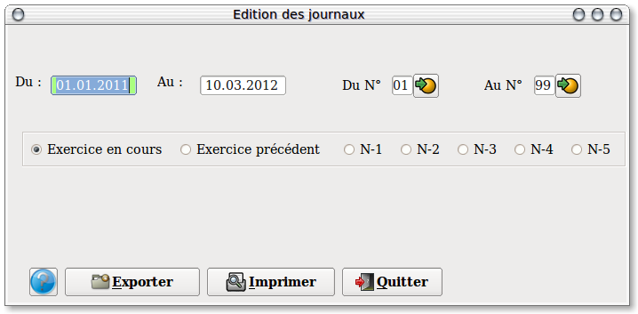
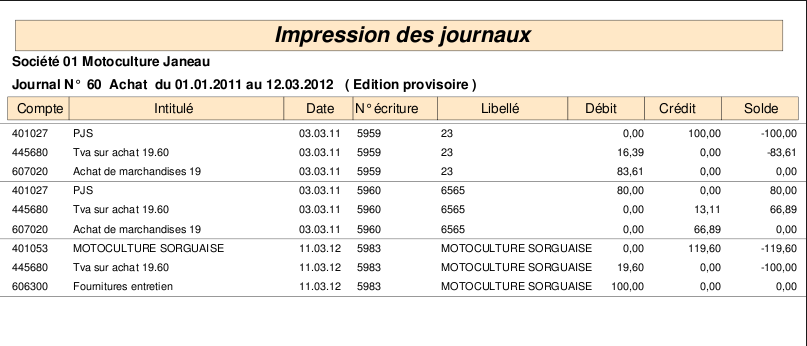

~ Comptabilité Laurux ~

~ Comptabilité Laurux ~ |
|
|
|

Selectionner en premier la date de début de l'édition puis celle
de la fin de période. Saisir ensuite les codes journaux à imprimer.
Par défaut, les dates proposées sont celles du début et de fin de l'exercice en cours. Modifiez ces dates si besoin, sous la forme JJMMAAAA.
Par défaut, également, les journaux de début et de fin sont proposés .
Enfin, vous pouvez choisir l'exercice a imprimer, (Pour rappel,Laurux conserve 5 exercices en archives) dans ce cas, comme pour l'exercice en cours, les dates de debut et de fin d'exercice s'affichent automatiquement, et bien entendu ces dates sont modifiables selon vos besoins..
Si vous souhaitez générer un fichier texte (Pour remettre à votre comptable par exemple)cliquez sur le bouton "Exporter". Cela va copier un fichier "Journaux.txt" sous votre répértoire de travail Laurux.
Pour creer votre rapport d'impression, il suffit de cliquer sur le bouton "Imprimer" pour qu'il soit généré nbsp; et affiché comme l'exemple ci-dessous.

Pour imprimer votre rapport, cliquer sur "l'imprimante".
----------------------------------------------------------------------------------------------------------------------